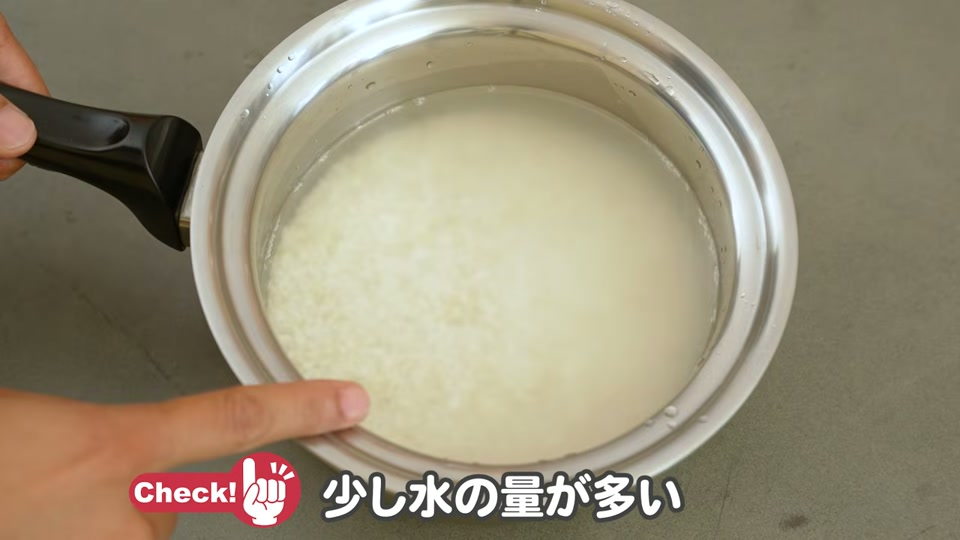
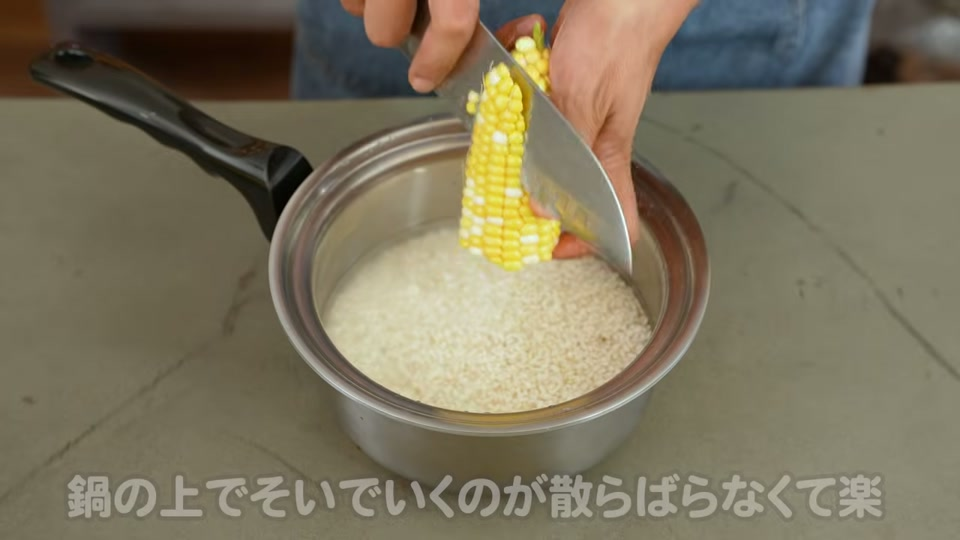
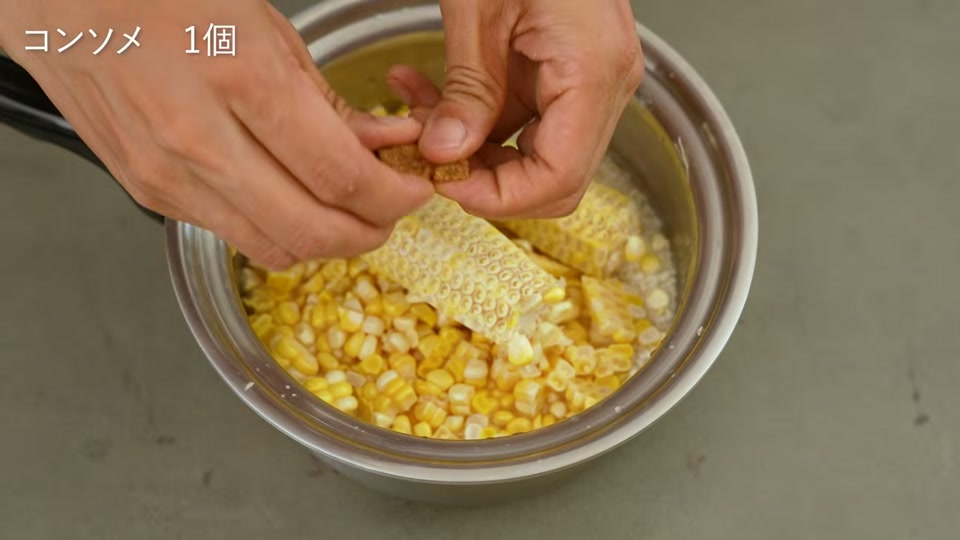
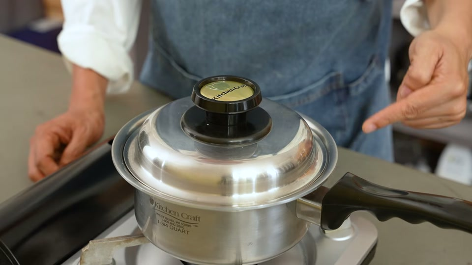
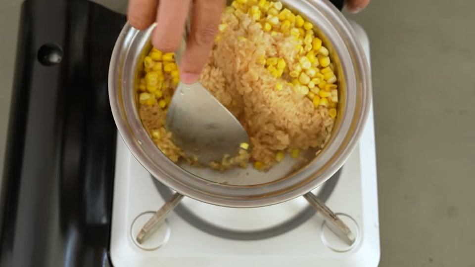
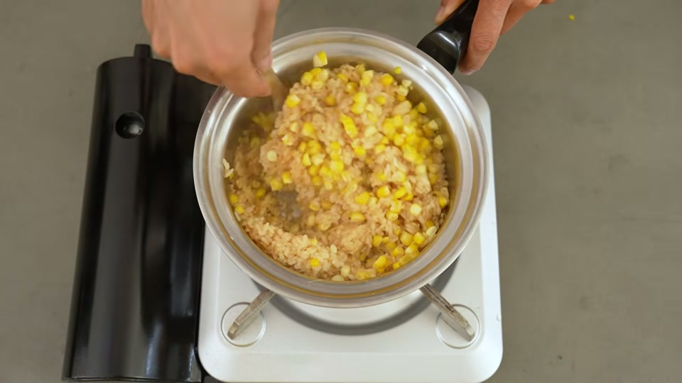

```
旬のとうもろこしを使った料理の中でも、特におすすめなのが「バター醤油とうもろこしおこわ」です。
結論からお伝えすると、高密閉・高蓄熱なステンレス鍋を使えば、炊飯器のにおい移りを気にせず、短時間でもっちり香ばしい最高のおこわが炊き上がります。
今回は、もち米の水加減や火加減のコツから、とうもろこしの旨味を余すことなく引き出す手順まで詳しく解説します。
バター醤油とうもろこしおこわの材料と準備

まずは必要な材料を用意しましょう。もち米の吸水時間が美味しさを左右するため、事前準備が大切です。
材料（作りやすい分量）
| 材料 | 分量 |
|---|---|
| もち米 | 1.5合 |
| とうもろこし | 1本 |
| 水 | ひたひた（お米の表面が出そうなくらい） |
| コンソメ | 1個 |
| 醤油 | 大さじ1 |
| バター | 20g |
事前準備のポイント
もち米は洗った後、20分以上しっかり水に浸けて吸水させておきます。しっかり吸水させることで、芯までふっくらとした食感に仕上がります。
失敗しない！とうもろこしおこわの作り方ステップ

ステンレス鍋を使って、焦げ付きなく美味しく炊き上げるための手順です。
1. 水加減を「ひたひた」に調整する
吸水したもち米の水気を切り、お鍋に入れます。水加減は「ひたひた」（もち米の表面が少し水から出そうになるくらいの量）にするのが、べたつかずにもっちり炊き上げる最大のコツです。
2. とうもろこしの実をそぐ
とうもろこしは半分に折ると扱いやすくなります。まな板の上で作業すると実が飛び散りやすいため、お鍋の上で直接包丁を入れて実を削ぎ落とすと無駄がありません。
3. 芯と調味料を加える
削ぎ落とした実だけでなく、とうもろこしの芯も一緒にお鍋に入れます。芯から非常に良い出汁と旨味が出るため、絶対に捨てずに使いましょう。続いて、コンソメ1個と醤油大さじ1を加えます。
4. 加熱・炊飯（中弱火→弱火で10分）
お鍋に蓋をして中弱火で加熱します。沸騰してフタの隙間からしっかり蒸気が上がってきたら、弱火に落として10分間加熱します。
5. 蒸らして仕上げ（蒸らし2〜3分＋バター）
10分経ったら火を止め、フタをしたまま2〜3分蒸らします。
蒸らし終わったらフタを開け、とうもろこしの芯を取り出します。仕上げにバター20gを加え、お鍋に残った蒸気と熱で溶かしながら、全体をサッと混ぜ合わせれば完成です。
美味しく仕上げるためのワンポイント

- 芯から出る出汁を活用する
とうもろこしは実だけでなく、芯にも旨味が詰まっています。一緒に炊き込むことで全体の風味が格段にアップします。 - しっかり蒸らして焦げ付き防止
ステンレス鍋で炊飯する際、「鍋底にくっつかないか」と心配になる方もいるかもしれません。しかし、炊き上がった後に2〜3分しっかり蒸らすことで、鍋底からお米がツルリと綺麗に剥がれるようになります。 - バターは一番最後に加える
最初からバターを入れて炊くのではなく、炊き上がりの蒸らし後に余熱で溶かし混ぜることで、バターの風味が飛ぶことなくリッチな香りが引き立ちます。
よくある質問（FAQ）

Q. もち米の水加減は普通のお米と違いますか？
A. はい、異なります。もち米は普通のお米よりも水分を吸いやすいため、水を多めに入れるとべたついてしまいます。水加減は「ひたひた」（もち米の表面が水から少し出るか出ないかくらい）に抑えるのが美味しく炊き上げるコツです。
Q. とうもろこしの芯も一緒に入れるのはなぜですか？
A. とうもろこしの芯からは非常に良い出汁と旨味が出ます。一緒に炊き込むことで、ご飯全体にとうもろこしの甘みとコクが行き渡ります。
Q. ステンレス鍋で炊くと焦げ付きませんか？
A. 正しい火加減（沸騰後に弱火で10分）を守り、炊き上がり後に2〜3分蒸らすことで、鍋底にお米がくっつかずツルリと剥がれます。
まとめとお手入れ・道具選びについて

ステンレス鍋を使った「バター醤油とうもろこしおこわ」は、素材の甘みと旨味が引き立つ絶品レシピです。高蓄熱なステンレス鍋なら、短時間でムラなく熱が通り、炊飯器特有のフッ素加工の匂い移りもありません。蒸らし時間を適切に取れば鍋底へのこびりつきもなく、後片付けも非常に簡単です。
ぜひ旬の時期に、ご家庭で試してみてください。
動画で紹介されているアイテム・サービス

動画内で使用・紹介されている調理器具や関連サービスの一覧です。
- キッチンクラフト２コート（動画で使用しているステンレス鍋）
- 大澤チャンネル公式インスタグラム（レシピのテキスト版や鍋のコツを発信）
- 大澤チャンネル オリジナル商品サイト（ステンレス菜箸などのオリジナル商品）
- 安全な浄水器「Re」（銀イオン・界面活性剤不使用の浄水器）
- ヘンケルス オールステンレス包丁（動画で使用している包丁）
- 酵素玄米炊飯器（発芽玄米・酵素玄米用炊飯器）
- 国産置き型浄水器 beaq